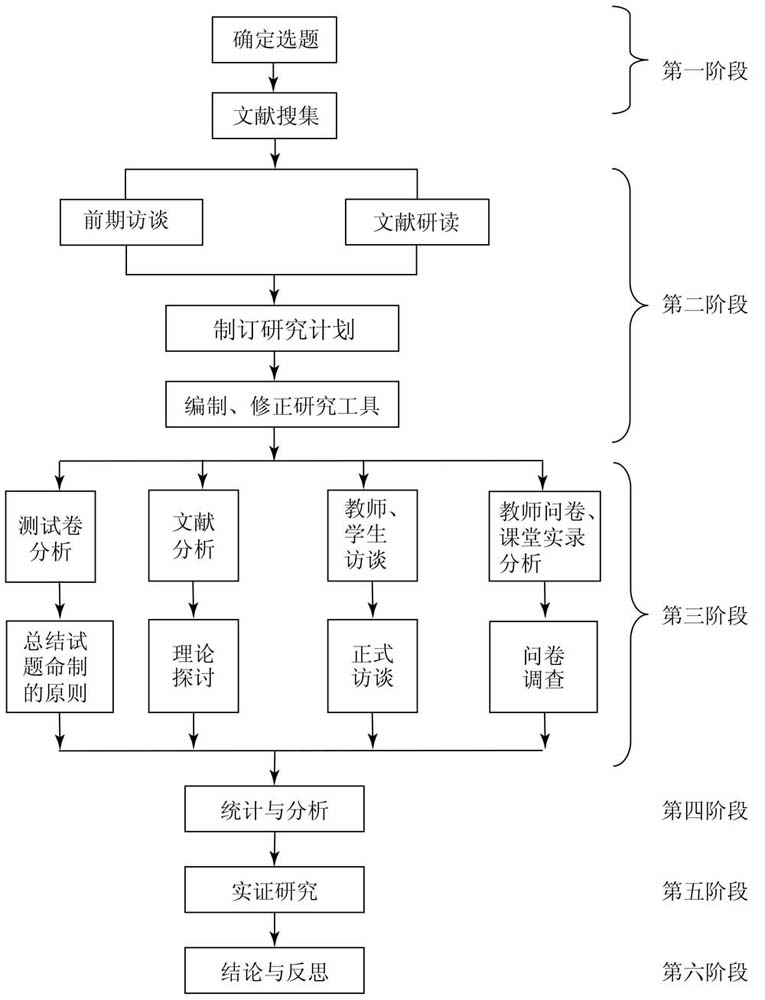

好的先生不是教书，不是教学生，乃是教学生学。
——陶行知
注重基础知识的掌握和技能的强化训练是中国数学的传统，但是教育者清楚地认识到扎实的基础知识和熟练的技巧对培养人的创新能力和思维能力是不足的。史宁中先生说创新能力依赖于三方面：知识的掌握、经验的积累、思维的训练，三方面同等重要。关于知识的掌握，我国的中小学数学教育是没有问题的；关于经验的积累，还差得很多；关于思维的训练，我们做得也不够，只能打五十分 [1] 。中国数学教育的传统重视知识，但是经验的积累和思维的训练明显不足。数学广角是人教版数学教材的重要内容之一，是小学数学思想方法教学的主要载体，有利于积累学生的数学经验和训练学生的数学思维，可谓小学数学教学的新鲜血液。
这一章主要介绍研究的背景，研究中涉及的核心概念、研究的内容和意义以及研究思路。
教学受到经济水平、生产力发展水平、政治制度、科学文化发展水平的影响和限制。教学目的、教学手段、教学策略、教学内容、教学对象都会随着社会的发展而变化。当今世界对人才的要求、“新一轮基础教育课程改革”（以下简称“新课改”）背景下小学数学课堂的变革和数学广角教学的需要成为这项研究的背景。
从1904年癸卯学制颁布、1905年废除科举至今，中国现代教育已逾百年历史；从1977年恢复全国统一高考制度至今，中国当代教育改革也已走过了40余年。从国内外的比较结果来看，中国培养的学生往往对书本知识掌握得很好，但是实践能力和创造精神还比较缺乏，比如蔡金法在《数学教育中的疑难问题》一文中指出：“中国课堂教学在培养学生常规策略上有效，而美国课堂在培养学生创造性思维上有效；中国课堂向来以组织精心、结构严谨著称。为了保证课堂教学结构的严谨性，教师要对整个教学过程进行周密的思考、精心的设计，从而为学生铺路，希望学生系统地了解概念的来龙去脉或解题过程的详细步骤。对于结构非常严谨的课，教师把所有的挑战都回避掉或者替学生克服了，以至于学生不用做太多的思考就可以得到答案，这是结构严谨的课的致命弱点” [2] 。当今社会，人才资源是科学发展的第一资源，是知识经济时代最活跃的生产力要素。高层次人才已经成为全球化竞争日趋激烈条件下制胜的核心战略资源。21世纪是知识经济的时代，劳动者在素质和结构方面发生了很大的变化，社会需要的是创新型人才。面对目前中国教育的弊端和社会需求之间的不平衡，中国的教育必须肩负起培养适应社会发展的人才的责任。
面对时代对创新型人才的呼吁与需求，中国当前的教育面临严峻的考验。在以考试为目标的教学里，多数教师以分数为目的，怕去改革，怕去尝试，怕因此而造成成绩下降。这样的教学，对学生个体而言，使得他们更容易发展以识记为主要特征的接受性学习，而仅有少部分学生能够形成以创新为主要特征的研究性学习。但是，人类的进步与创新，必须依靠后一种学习方式。
基础教育课程改革是这项研究的主要背景。中国教育部在2001年6月8日颁布了《基础教育课程改革纲要（试行）》，开启了我国新一轮的基础教育课程改革。这次改革是中华人民共和国成立以来的第八次改革。《基础教育课程改革纲要（试行）》提出了六项具体的改革目标，从课程功能、课程结构、课程内容、教学过程、课程评价、课程管理方面对基础教育课程进行了全方位的改革 [3] 。有人评价这次课程改革是改革理念最先进、改革投入最多、参与人员最广泛、改革最全面深入的一次课程改革，因此将会是影响最深远的一次课程改革 [4] 。该纲要为基础教育课程改革的指导性文件，2001年的7月教育部颁布了义务教育阶段的18个课程标准，《全日制义务教育数学课程标准（实验稿）》就在其中，该标准首次将义务教育阶段的数学课程进行了全盘考虑，并且根据学生的年龄特征将九年的学习划分成三个学段：第一学段是1～3年级；第二学段是4～6年级；第三学段是7～9年级。2011年教育部又颁布了《数学课程标准（2011年版）》，更加具体地描述了数学教学的总目标和学段目标、课程的内容和实施的建议，比如在新的课程标准中，原有的关键词“符号感”“统计观念”分别修改为符号意识和数据分析观念；新增了几何直观、运算能力、模型思想、创新意识四个关键词；明确提出了“四基”：基础知识、基本技能、基本数学思想、基本数学活动经验；提出了发现和提出问题的能力、分析和解决问题的能力。在新课改实施以来，教师的教学观念、教学方法和教材的内容等都发生了很大的变化。但是，改革越是走向深入，出现的问题也越多，数学课堂教学相对于以前的教学是发生了很多的变化，但是从教学的理念到教学的实践是否都服务于学生、都有利于学生的发展，在教科书、教学理念的变换之下，这些具体的变化是如何影响教师的教学的都需要深入思考。
教育部在2001年6月8日颁布的《基础教育课程改革纲要（试行）》，开启了我国新一轮的基础教育课程改革。随着课程改革的不断深入，新的课程标准也做出了相应的修订，新的课程标准将问题解决列为数学教育的四大目标之一，对义务教育阶段的学生须达到的问题解决的目标，做了如下具体规定：“初步学会从数学的角度提出问题、理解问题，并能综合运用所学的知识和技能解决问题，发展应用意识；形成解决问题的一些基本策略，体验解决问题策略的多样性，发展实践能力与创新精神；学会与人合作，并能与他人交流思维的过程和结果；初步形成评价与反思的意识 [5] 。”人教版数学课标实验教材在围绕课程标准的理念下，对以往教材进行了大幅度改编，以解决问题代替了应用题，不再将应用题根据解题的特点进行分类，而是采用集中编排和分散编排的方式，其分散编排就是将解应用题的知识渗透到数与代数、统计与概率、空间与图形这三大学习领域，集中编排主要体现在综合实践、数学广角里。数学广角是一个应运而生的解决问题的板块，但是它具有自己的独特性，不仅具有解决问题的一般特点，而且具有实践性强，渗透数学思想方法、手段与原理，积累活动经验的特点。数学广角作为人教版数学课标实验教材新增的特色板块，内容新颖、与生活联系密切，活动性和操作性较强，教与学都有着较大的探究空间，学生对这块内容的学习有着浓厚的兴趣，并且其与其他内容相比，思维含量明显较高。但随着课改实验的深入进行，各种教学的困惑也随之而来。如，教学目标定位失当、数学思考落实不到位、数学活动徒具形式、过度追求生活化与趣味性。
认识到数学广角存在的意义之后，面对数学广角教学的这些情况，这项研究的目的是优化数学广角的教学，对数学广角教学实践中的问题进行梳理，了解教学的现状与教师教学中存在的困难，并提出一些教学的思考和建议。
这项研究中主要涉及8个核心概念，它们分别是：数学广角、教师知识、教学现状、优质课、常态课、教学案例、调查研究和数学思想方法。为了方便研究，在查找已有文献和研究的基础之上，对这八个核心概念进行了如下界定。
（1）数学广角（Mathematics Wide Angle）：是人民教育出版社义务教育课程标准实验教科书第一学段和第二学段教材中的独立单元 [6] 。即它是一个单元的名称，本身的内容非常丰富，包括一些经典名题（如鸡兔同笼），数学中一些重要的基本问题（如对策、统筹）和一些重要的与数学相关的研究方法、手段和原理（如乘法原理、排列与组合、集合了中的容斥原理）等。其编排紧贴生活、由浅入深、螺旋上升，教学目的是渗透数学的思想方法，增加学生的体验，积累学生的数学活动经验，发展学生的创作思维，培养学生的创新能力。但是数学广角思维含量与其他部分的内容相比过高，对教师教学与学生学习都是很大的挑战，因此数学广角的教学要面向的是全体学生，培养学生的数学素养。
（2）教师知识（Teachers' Knowledge）：是指教师（作为教师时）所知道的东西。它包含教师的“信念”，如在教授某一特定内容时，知道哪种策略是最为有效的；“记忆”，如一本教科书的结构是指什么；“理解”，如怎样运用某种教学方法，等等 [7] 。这是教师需要或者说担任教师的角色时必不可少的知识。关于教师知识的研究，最近十几年越来越多，但是关于教师必须拥有什么知识和拥有多少知识的研究，人们尚未达成共识。人们在早有的认识中认为：教师只需要掌握学科内容方面的知识。这种观念到后来被逐渐扩展，人们意识到教师除了要掌握学科知识之外，还必须具备教学的艺术，即关于教学的知识。
埃尔伯兹（Elbaz）把她研究的知识称为“实用知识”，具体包括学科知识、课程知识（关于学习的经验及课程内容的建构）、教学知识（包括课堂管理、学生的需要）、教学环境知识和自身知识。
舒尔曼（Schuurman）从他的研究角度提出了教师需要具备的七种类别的知识：与学科内容相关的知识；一般性教学知识；课程知识；与教学内容相关的知识；与学习者及其特点相关的知识；与教育环境相关的知识；关于教育的目标、目的和价值以及他们的哲学和历史基础的知识。
总结以上学者的研究，教师知识可以归纳到关于数学的这个大背景的知识、教学的知识、学生的知识、教育技术的知识。
关于教师储备知识的多少，多数研究者认为：一线教师的知识储备是不足的。
（3）教学现状（The Present Teaching Situation）：从认识论的角度看，教学是一种特殊的认识 [8] 。教学认识的内外部条件主要包括活动的条件和环境的条件。活动的条件指教学要素，如教师、学生、课程、教学手段；环境的条件指教师、教学设备、校园等，关于教学认识的动力不是简单直接地来自社会实践，而是主要在于教和学之间的矛盾及其转化；教学认识的客体以课程教材为基本形态；教学认识的主体是学生；教师是教学认识的领导者；教学认识的标准主要是考试。教学现状的含义是教学方面的状态和情况，它可以由以下三个方面来表现：学校、学生和教师。它们是反映教学状况的最主要和最直接的因素。通过教学状况的考量，可以全方位地了解教学的情况，可以对教育决策做出很好的、很恰当的决定，也可以为教学的优化提供参考。
（4）优质课（High Quality Courses）：也称示范课，指在国家级的课堂教学观摩活动中作为观摩对象的课和在国家级的教学比赛中荣获最高奖项的课。成功的优质课教学，不仅反映一般课的教学状况，而且对于一般课教学有示范性、导向性、探索性，其质量和效率都比较高 [9] 。在该项研究中的优质课围绕小学数学教学进行，主要以全国深化小学数学改革观摩课活动中的数学广角为主题。优质课是对课堂教学不断追求的体现。优质课往往不是一名教师教学的智慧结晶，而是一个教师团队，甚至是一个地区的优秀教师的集体成果，展现的是教师的个人数学教学素养和教学中各先进理念的实践与创新情况，因此优质课具有代表性。
（5）常态课（The Normal Course）：是相对于公开课、比赛课而言的，是教师和学生为了完成一定的教学目标，在教室里，在没有观察者的情况下，自然地上课。就是说，常态课是所有学校里每间教室都在发生着的教学活动。
（6）教学案例（Teaching Case）：是指发生在教学过程中包含有某些决策或疑难问题的教学情境故事。它比较详细地叙述了一段或一堂课的具体的教学情节，向人们提供人物、场合、过程、结果，引发大家的思索。
（7）调查研究（Survey Research）：是研究者有目的、有意识地通过对社会现象的了解、考察和分析、研究，来科学阐明社会生活的本质及其规律的一种认知活动 [10] 。调查研究是通过观察、测量和询问等方式对教育现象的实证材料进行有目的的收集、分析，是由感性认识到理性认识的过程。
（8）数学思想方法（Mathematical Thought and Method）：数学思想是对数学知识本质的认识，是对数学规律的理性认识，是从某些具体的数学内容和对数学的认识过程中提炼升华的数学观点。它在认识活动中被反复运用，带有普遍的指导意义，是建立用数学解决问题的指导思想，例如，化归思想、分类思想、模型思想、极限思想、统计思想、最优化思想等。数学方法是指从数学角度提出问题、解决问题（包括数学内部问题和实际问题）的过程中所采用的各种方式、手段、途径等，包括变换数学形式 [11] 。数学思想方法一词被广泛使用，在我国基础教育阶段越发受到重视。教学中不仅注重基础知识，而且重视数学思想方法的渗透。
从上文的界定可以看出，数学广角教学的研究，主要是对数学思想方法教学的认识研究。所以，这项教学研究主要以优质课、常态课作为研究对象，对相关教学知识进行研究。
通过前期的阅读与了解，基于以上的研究目的和研究背景，确定了该研究的基本内容和意义。
在学术研究上，近几年来关于数学广角教学的研究较多，但是主要集中在小学教师对教学案例的研究，关于数学广角教学现状的研究几乎没有，仅有一些数学广角教学中出现的问题散落在教学案例分析中。关于“解决问题”的研究也没有将数学广角置于其中。此项研究在这些已有研究的基础上，通过对以下三个问题的探索，希望能够全面地认识数学广角教学的情况，找到教师和学生在教学中存在的困难，增进、优化、提升教师对数学广角教学的认识。
这项研究总体上要探讨的问题如下：
（1）教师的数学广角教学知识储备水平处于什么状况？
俗话说，教师有一壶水才可能给学生一杯水。即教师的知识储备水平会直接影响到学生的学习。在已有的一些研究中有迹象表明，中小学教师储备的数学知识不是很足。布朗（Brown）、康妮（Cooney）与琼斯（Jones）在回顾关于职前小学教师知识的研究之后推断说：“这一类型的研究留下了深刻的印象，即职前小学教师不具备教小学数学所必需的数学认识水平，这种水平是一些专业组织，如NCTM在各种声明中所推荐的。” [12] 这项研究将教师在教学中和调查问卷中反映出来的在数学广角教学内容知识、教学策略、课堂讲授、学生认识等方面的情况加以研究。
（2）教师怎么教，学生怎么学？
换句话说，这个问题主要是要探讨教师的教学理念与教师在教学中的实践情况，从教师教、学生学的情况反映出教师的教学理念，教师是否是以学生的发展为中心的，以及教师在课程观、教学观、学生观、评价观等方面的情况。这些方面是教师教学与学生学习的过程中最困难的部分。为此，研究中将较为详细地分析数学广角的教学内容。
（3）教师教学的结果与学生学习的结果怎样？
其是指教师教学目的的制定与实现的情况，以及学生对数学广角的认知和在测试中的表现。
围绕以上要解决的问题，通过对成都市、昆明市和贵阳市三地部分小学数学教师做的调查，来了解数学广角教学的现状。针对调查目的，运用文献法、问卷调查法、案例研究法，从教师的观念和教师的实践两个层面对教学的现状进行探讨，使用测试卷，初步了解学生的学习结果，分析人教版小学数学教材中关于数学广角的编排特点，厘清数学广角里的数学思想方法及教学要求。
我国数学教育从中华人民共和国成立以来，走过了一段不平凡的历程，从1949年颁布的第一个课程标准《小学算术课程暂行标准（草案）》到2001年第八次课程改革，分别于2001年7月颁布了《全日制义务教育数学课程标准（实验稿）》和2011年12月颁布了《义务教育数学课程标准（2011年版）》，这些教学大纲或课程标准的颁布意味着我国课程改革的进步。中华人民共和国成立初期，我国一边改造了之前遗留下来的学校教育问题，一边巩固和发展了之前教育成果，并在此基础上建立了新的教育体系。接着开始学习苏联的小学教育，接受凯洛夫的教育学思想，使小学数学教育严密化、系统化。一系列课程改革使我国小学数学在教材、教学方法方面取得了很大的进展。到20世纪80年代，我国基础教育开始注意吸收新的教育思想，逐渐地，我国小学数学的课程、教材、教学方法在改革中形成自己的特色。重视基础知识的学习和基本技能的训练是我国数学教育的传统，这使中国学生在国际数学竞赛中获得了很多荣誉，但是为什么这些获奖的孩子最后都没有能展示出与之相匹配的成就？原因可能在于以往学生对数学基础知识的学习，本质上是理解和记忆，而对数字技能的学习，主要是证明的技能和运算的技能，这对人的发散性思维、创新能力的培养是远远不够的。随着时代的发展和要求，继承重视基础知识与基本技能的优良传统的同时，又开始重视发散性思维和创新能力的培养。从这个意义上看，小学数学教科书的编排不断紧跟这一理念，主要目的就是帮助教师学习、积累数学活动经验，培养学生的发散性思维。数学广角中的内容发散性思维含量高、题型新颖有趣，有利于学生体验研究，同时对教师的教学充满挑战，不仅需要教师有先进的教学理念、多元而科学的评价方式，而且需要教师不断提高自己的专业素养。
在数学广角的学习中，学生能经历一些具体的数学活动，比如画图、推理、优化、建立模型，这能够增加学生的数学体验，积累数学的活动经验，拓展学生和教师对小学数学（主要围绕四则运算）的认识；同时，培养了学生思维的多样性，可以让学生从不同的角度看待数学，感受到数学的美和魅力。但是数学广角在教学实践中易出现很多问题，比如，有些教学过于生活化，没有了数学味；有的教学探究过程过于盲目，导致学习效率低，学生思维混乱；有的教师为了应付考试直接讲结果，忽略过程等。
开展这项研究的意义是了解教师对数学广角的认识。数学广角中涉及的许多知识曾经是奥林匹克数学中的知识，现在作为基础教育的内容，每一个学习人教版教材的学生都要学习，那么在实际教学中教师是怎样表现的呢？在课堂教学中能达到数学广角内容本身的教学目标吗？通过查阅2012年7月8日至15日在韩国首尔召开的第12届国际数学教育大会ICME－12（The 12th International Congress on Mathematics Education）了解到：在现阶段的数学教育研究中，课堂教学研究所占的比例逐渐增大，研究的问题和视角包括教学方法、课堂教学现状、具体知识和学生的心理，但有关课堂教学研究方法与视角、教学行为和信息技术的研究相对少一些。因此，选取数学广角教学的现状进行研究，符合国际数学研究的趋势，丰富了国内具体知识教学的研究。
这项研究主要采用定量分析与定性分析相结合的方式。在宏观层面上，通过教师问卷和学生问卷的调查分析，间接地了解教师在数学广角教学方面的教学理念和知识情况，通过教师访谈，重点、深入地了解一些问卷不能反映或者是反映不全的问题，在获得教师感受、表述性的资料后，再采用优质课分析和常态课观察、收集教学案例的方式从实践层面去研究小学数学广角的教学现状。
在经过多方思考、讨论和前期的调查、计划后，最终形成了研究的技术路线图。（见图1.1）

图1.1 研究的技术路线图
[1] 史宁中．《数学课程标准》的若干思考［J］．数学通报，2007，46（5）: 1－5.
[2] 蔡金法．数学教育中的疑难问题［J］．小学数学教与学，2014.11: 3－4.
[3] 教育部．《基础教育课程改革纲要（试行）》，2001.
[4] 钟启泉．“教师专业化”的误区及其批判［J］．教育发展研究，2003（3－4）: 110－123.
[5] 中华人民共和国教育部制定，数学课程标准（2011年版）［M］．北京：北京师范大学出版社，2012.
[6] 丁丽．数学广角学什么与教什么［M］．北京：北京理工大学出版社，2014.
[7] 范良火．教师教学知识发展的研究［M］．上海：华东师范大学出版社，2014.
[8] 王策三．教育论集［M］．北京：人民教育出版社，2002.
[9] 刘传熙．优质课评价体系研究［J］．教育与职业，2013（26）.
[10] 张性秀，常艳娥．调查研究理论与方法［M］．长沙：国防科技大学出版社，2001.
[11] 钱珮玲．中学数学思想方法［M］．北京：北京师范大学出版社，2010.
[12] ［美］D·A·格劳斯．数学教与学研究手册［M］．徐泓，冯录天，译．上海：上海教育出版社，1999.